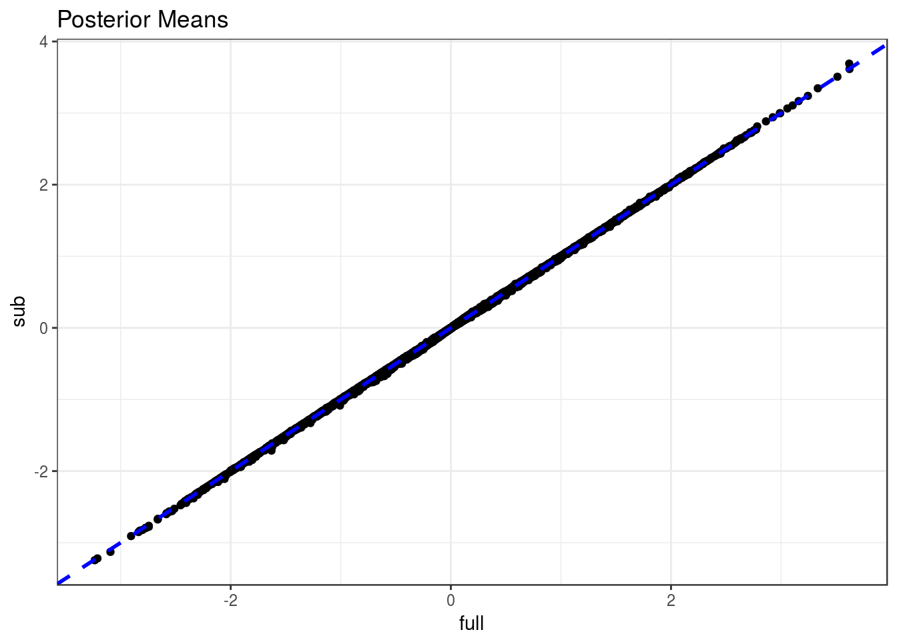
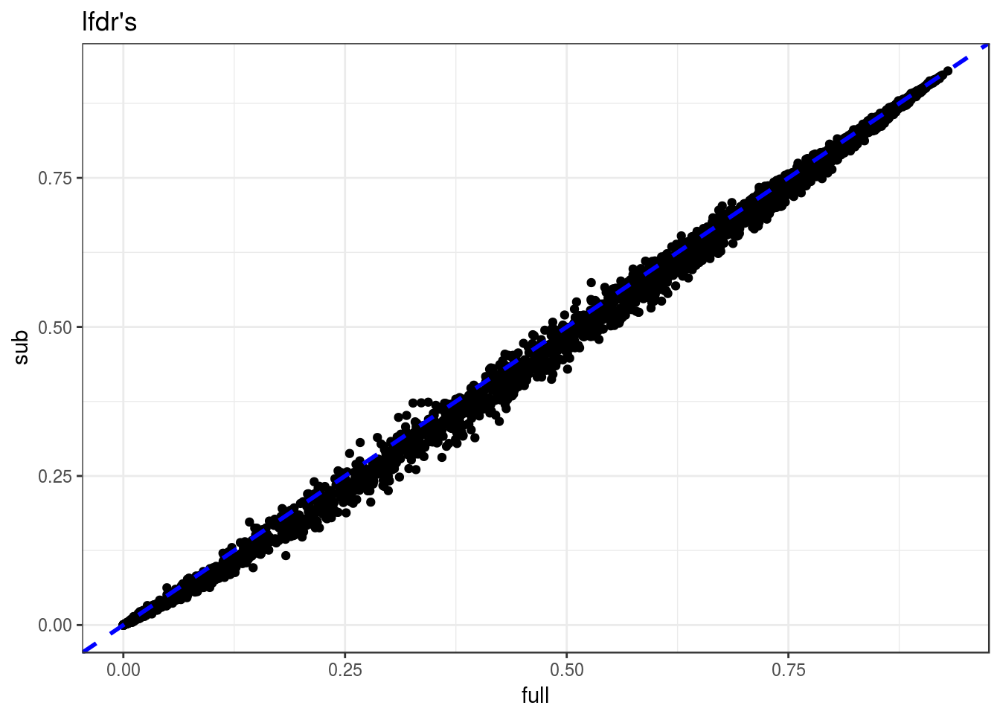

Here, I look at differences in using subsample = TRUE vs subsample = FALSE in vicar::mouthwash.
library(tidyverse)## Loading tidyverse: ggplot2
## Loading tidyverse: tibble
## Loading tidyverse: tidyr
## Loading tidyverse: readr
## Loading tidyverse: purrr
## Loading tidyverse: dplyr## Conflicts with tidy packages ----------------------------------------------## filter(): dplyr, stats
## lag(): dplyr, statslibrary(seqgendiff)
library(vicar)
mat <- t(read.csv("../../reproduce_ruv3/Output/gtex_tissue_gene_reads_v6p/blood.csv")[, -c(1,2)])
dout <- seqgendiff::poisthin(mat = mat, nsamp = 30, ngene = 10000, prop_null = 0.5,
signal_fun = stats::rnorm, signal_params = list(mean = 0, sd = 1))
Y <- log2(dout$Y + 1)
X <- dout$XEstimate number of hidden confounders.
num_sv <- sva::num.sv(dat = t(Y), mod = X)
num_sv## [1] 3Full mouthwash.
fstart <- proc.time()
mout_full <- mouthwash(Y = Y, X = X, k = num_sv,
cov_of_interest = 2, include_intercept = FALSE)
ftot <- proc.time() - fstartSubsample mouthwash.
sstart <- proc.time()
mout_sub <- mouthwash(Y = Y, X = X, k = num_sv,
cov_of_interest = 2, include_intercept = FALSE,
subsample = TRUE, num_sub = 1000)
stot <- proc.time() - sstartFit limma::voom -> limma::limma -> limma:ebayes -> ashr::ash pipeline for good measure:
astart <- proc.time()
voom_out <- limma::voom(counts = t(dout$Y), design = X)
limma_out <- limma::lmFit(object = voom_out)
ebayes_out <- limma::ebayes(fit = limma_out)
aout <- ashr::ash.workhorse(betahat = limma_out$coefficients[, 2],
sebetahat = sqrt(ebayes_out$s2.post),
df = ebayes_out$df.total)## Warning in if (df == Inf) {: the condition has length > 1 and only the
## first element will be usedatot <- proc.time() - astartRuntimes
temp <- matrix(c(ftot[1], stot[1], atot[1]), ncol = 3)
colnames(temp) <- c("Full MOUTHWASH", "Sub MOUTHWASH", "ASH")
knitr::kable(temp)| Full MOUTHWASH | Sub MOUTHWASH | ASH |
|---|---|---|
| 371.3 | 13.98 | 11.34 |
Subsample mouthwash gets the estimate of pi0 pretty good!
temp <- matrix(c(ashr::get_pi0(mout_full),
ashr::get_pi0(mout_sub),
ashr::get_pi0(aout)),
ncol = 3)
colnames(temp) <- c("Full MOUTHWASH", "Sub MOUTHWASH", "ASH")
knitr::kable(temp)| Full MOUTHWASH | Sub MOUTHWASH | ASH |
|---|---|---|
| 0.4883 | 0.4818 | 0.962 |
Sub mouthwash and full mouthwash have almost the exact same posterior means
dat <- data_frame(full = mout_full$result$PosteriorMean, sub = mout_sub$result$PosteriorMean)
ggplot(data = dat, mapping = aes(x = full, y = sub)) +
geom_point() +
geom_abline(slope = 1, intercept = 0, col = "blue", lty = 2, lwd = 1) +
theme_bw() +
ggtitle("Posterior Means")
lfdr’s are a little bit more different
dat <- data_frame(full = mout_full$result$lfdr, sub = mout_sub$result$lfdr)
ggplot(data = dat, mapping = aes(x = full, y = sub)) +
geom_point() +
geom_abline(slope = 1, intercept = 0, col = "blue", lty = 2, lwd = 1) +
theme_bw() +
ggtitle("lfdr's")
The different estimate of the hidden confounders:
mout_full$z2## [1] 0.6001 2.4029 0.7366mout_sub$z2## [1] 0.6067 2.4124 0.6828But there is only a small decrease in AUC:
library(pROC)## Type 'citation("pROC")' for a citation.##
## Attaching package: 'pROC'## The following objects are masked from 'package:stats':
##
## cov, smooth, varwhich_null <- abs(dout$beta) < 10 ^ -10
aucmat <- matrix(c(pROC::auc(pROC::roc(predictor = mout_full$result$lfdr, response = which_null)),
pROC::auc(pROC::roc(predictor = mout_sub$result$lfdr, response = which_null)),
pROC::auc(pROC::roc(predictor = aout$result$lfdr, response = which_null))),
ncol = 3)
colnames(aucmat) <- c("Full MOUTHWASH", "Sub MOUTHWASH", "ASH")
knitr::kable(aucmat)| Full MOUTHWASH | Sub MOUTHWASH | ASH |
|---|---|---|
| 0.5091 | 0.5092 | 0.5052 |
sessionInfo()## R version 3.3.2 (2016-10-31)
## Platform: x86_64-pc-linux-gnu (64-bit)
## Running under: Ubuntu 16.04.2 LTS
##
## locale:
## [1] LC_CTYPE=en_US.UTF-8 LC_NUMERIC=C
## [3] LC_TIME=en_US.UTF-8 LC_COLLATE=en_US.UTF-8
## [5] LC_MONETARY=en_US.UTF-8 LC_MESSAGES=en_US.UTF-8
## [7] LC_PAPER=en_US.UTF-8 LC_NAME=C
## [9] LC_ADDRESS=C LC_TELEPHONE=C
## [11] LC_MEASUREMENT=en_US.UTF-8 LC_IDENTIFICATION=C
##
## attached base packages:
## [1] stats graphics grDevices utils datasets methods base
##
## other attached packages:
## [1] pROC_1.9.1 vicar_0.1.6 seqgendiff_0.1.0 dplyr_0.5.0
## [5] purrr_0.2.2 readr_1.0.0 tidyr_0.6.1 tibble_1.2
## [9] ggplot2_2.2.1 tidyverse_1.1.1
##
## loaded via a namespace (and not attached):
## [1] Biobase_2.30.0 httr_1.2.1 jsonlite_1.3
## [4] splines_3.3.2 foreach_1.4.3 modelr_0.1.0
## [7] assertthat_0.2.0 highr_0.6 stats4_3.3.2
## [10] yaml_2.1.14 RSQLite_1.1-2 backports_1.0.5
## [13] lattice_0.20-34 digest_0.6.12 rvest_0.3.2
## [16] colorspace_1.3-2 htmltools_0.3.5 Matrix_1.2-8
## [19] plyr_1.8.4 psych_1.6.12 XML_3.98-1.5
## [22] broom_0.4.2 haven_1.0.0 genefilter_1.52.1
## [25] xtable_1.8-2 scales_0.4.1 annotate_1.48.0
## [28] mgcv_1.8-17 IRanges_2.4.8 ashr_2.0.5
## [31] BiocGenerics_0.16.1 lazyeval_0.2.0 mnormt_1.5-5
## [34] survival_2.41-2 magrittr_1.5 readxl_0.1.1
## [37] memoise_1.0.0 evaluate_0.10 doParallel_1.0.10
## [40] nlme_3.1-131 MASS_7.3-45 forcats_0.2.0
## [43] xml2_1.1.1 foreign_0.8-67 truncnorm_1.0-7
## [46] tools_3.3.2 hms_0.3 stringr_1.2.0
## [49] S4Vectors_0.8.11 munsell_0.4.3 AnnotationDbi_1.32.3
## [52] grid_3.3.2 iterators_1.0.8 labeling_0.3
## [55] rmarkdown_1.3 gtable_0.2.0 codetools_0.2-15
## [58] DBI_0.6 reshape2_1.4.2 R6_2.2.0
## [61] lubridate_1.6.0 knitr_1.15.1 rprojroot_1.2
## [64] stringi_1.1.2 pscl_1.4.9 parallel_3.3.2
## [67] SQUAREM_2016.8-2 sva_3.18.0 Rcpp_0.12.11This site was created with R Markdown